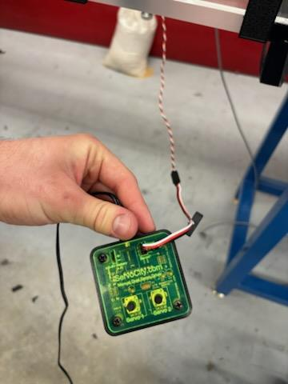
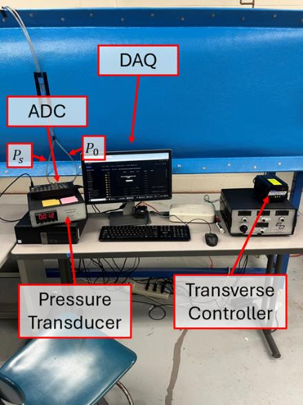

Experimental Setup
Testing was conducted in ERAU’s open-loop subsonic wind tunnel. The transparent-walled test section allowed direct observation of the instrumentation throughout each run. Two pitot-static probes were deployed simultaneously: a stationary probe to record freestream conditions and a motorized traverse probe to sweep through the wake region behind the wing. Pressure readings were fed to analog and digital manometers and captured by the data acquisition system.
The flap deflection system was custom-built: a servo microcontroller (ServoCity) interfaced with servos embedded in the wing allowed precise, repeatable angular positioning between test runs. A DC power supply regulated voltage to the servo system. Ambient conditions were logged before each sweep — temperature Tamb = 294.15 K and pressure Pamb = 102,268.94 Pa — enabling accurate air density calculation at each test condition.

The data acquisition pipeline ran a MATLAB script on the DAQ computer to log pressure data from the analog-to-digital converter (ADC) in real time, automatically step the traverse probe through programmed height increments, and export processed velocity profiles for post-processing.

The NACA 4412 wing was mounted to a force balance spanning the test section at a fixed angle of attack. During installation, the wing’s structural attachment failed at the initially commanded angle, requiring the model to be re-secured using electrical tape. The wingtip friction against the tunnel walls provided additional lateral support. These improvised fixes were acknowledged as sources of additional uncertainty in the final analysis.